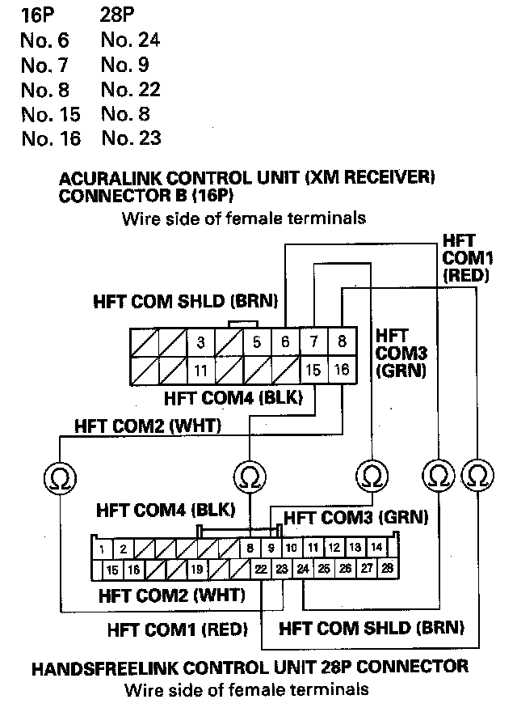
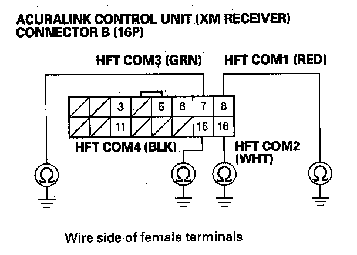
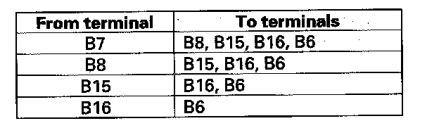
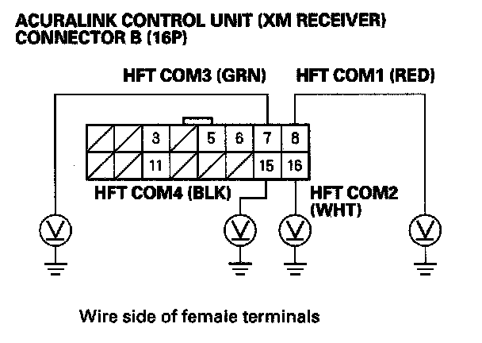
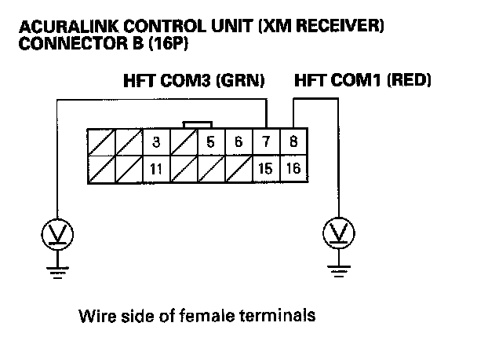

B2208
DTC B2208: HandsFreeLink Control Unit Lost Communication With AcuraLink Control Unit1. Connect the HDS to the DLC.
2. Clear the DTC with the HDS.
3. Turn the ignition switch OFF, then turn it ON (II) and wait 30 seconds or more.
4. Check for DTC with the HDS.
Is DTC B2207, B2208 indicated?
YES - Check the battery condition. If the system OK, replace the AcuraLink control unit (XM receiver).
NO
- If the B2208 is not indicated. Intermittent failure, system OK at this time. Check for poor connections or loose terminals at the AcuraLink control unit (XM receiver).
- If the B2207 is not indicated, go to Step 5.
5. Turn the ignition switch OFF.
6. Disconnect the AcuraLink control unit(XM receiver) connector B (16P) and HandsFreeLink control unit 28P connector.

7. Check for continuity between the following terminals of the AcuraLink control unit (XM receiver) connector B (16P) and HandsFreeLink control unit 28P connector.
Is there continuity?
YES - Go to Step 8.
NO - Repair open in the wire(s) between AcuraLink control unit (XM receiver) and the HandsFreeLink control unit.

8. Check for continuity between body ground and AcuraLink control unit (XM receiver) connector B (16P) terminals No. 7, 8, 15 and 16 individually.
Is there continuity?
YES - Repair short to body ground in the wire(s) between the AcuraLink control unit (XM receiver) and the HandsFreeLink control unit.
NO - Go to Step 9.

9. Check for continuity between the terminals of AcuraLink control unit (XM receiver) connector B (16P) as follows.
Is there continuity between any of the terminals?
YES - Repair short in the wire(s) between the AcuraLink control unit (XM receiver) and the HandsFreeLink control unit (replace the appropriate shield harness).
NO - Go to Step 10.
10. Turn the ignition switch ON (II).

11. Measure the voltage between body ground and AcuraLink control unit (XM receiver) connector B (16P) terminals No. 7, 8, 15 and 16 individually.
Is there any voltage?
YES - Repair short to power in the wire(s) between the AcuraLink control unit (XM receiver) and the HandsFreeLink control unit.
NO - Go to Step 12.
12. Turn the ignition switch OFF.
13. Reconnect the AcuraLink control unit (XM receiver) connector B (16P).

14. Measure the resistance between AcuraLink control unit (XM receiver) connector B (16P) terminals No. 7, No. 8, and No. 15, No. 16.
Is there less than about 100 kohms?
YES - AcuraLink control unit(XM receiver) is faulty, replace the AcuraLink control unit (XM receiver).
NO - Go to Step 15.
15. Reconnect the HandsFreeLink control unit 22P connector.
16. Turn the ignition switch ON(II).

17. Measure the voltage between the body ground and the AcuraLink control unit (XM receiver) connector B (16P) terminals No. 7, No. 8 individually.
Is there less than about 3.5 V?
YES - AcuraLink control unit (XM receiver) is faulty, replace the AcuraLink control unit (XM receiver).
NO - HandsFreeLink control unit is faulty, replace the HandsFreeLink control unit.